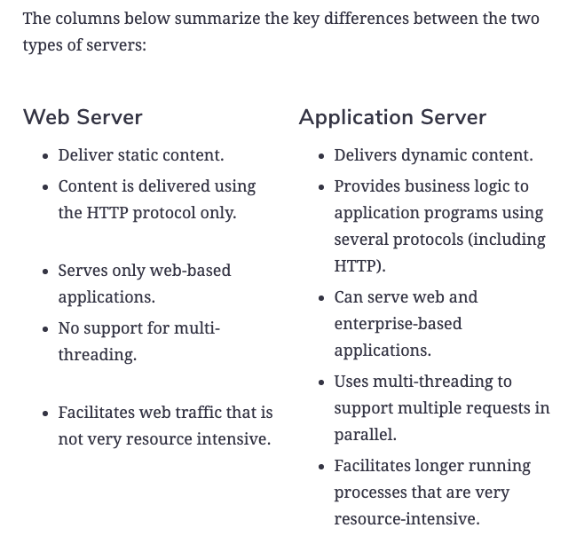

Flask is a simple web application server. There are many web web application servers.
There are also many web servers.
Most web application servers can also function as web servers. Instead of using S3, I could have served the HTML, CSS, ... ... directly from the flask application on EC2. Why did I pick the more complex configuration if I could have served the content from Flask? Well, I can pound a nail in with hammer or a banana. Both will work.
Web serving and web application serving have different requirements. An engine that is good at web serving is not good at web application serving and vice-versa.
When designing a SW system, "You cannot be a floor wax and a mouth wash. You have to pick." One of the strengths of the microservices is that you can optimize SW for a specific task instead of having one large program that tries to "be a floor wax and a mouth wash."
We will cover microservice concepts later in this lecture and other lectures.